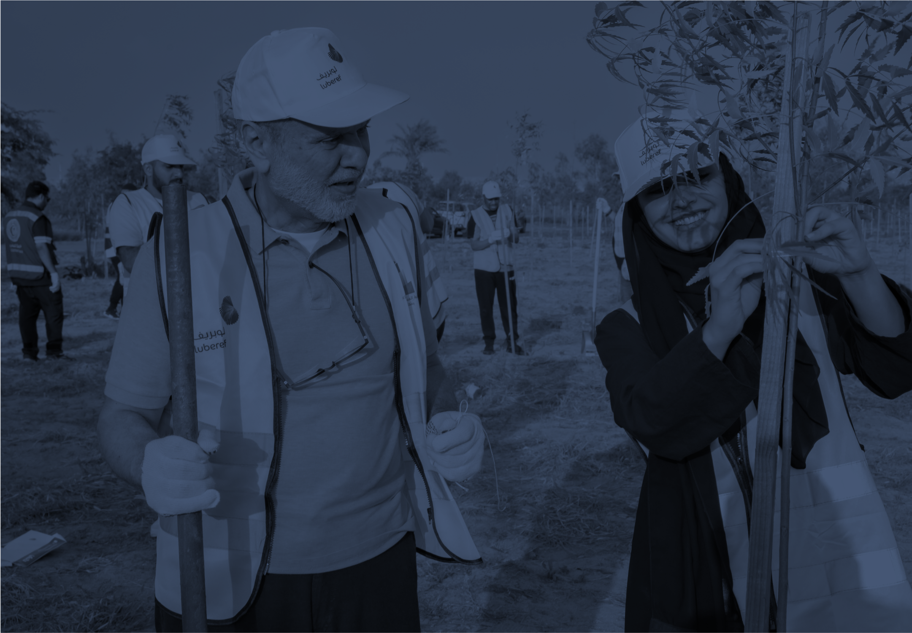
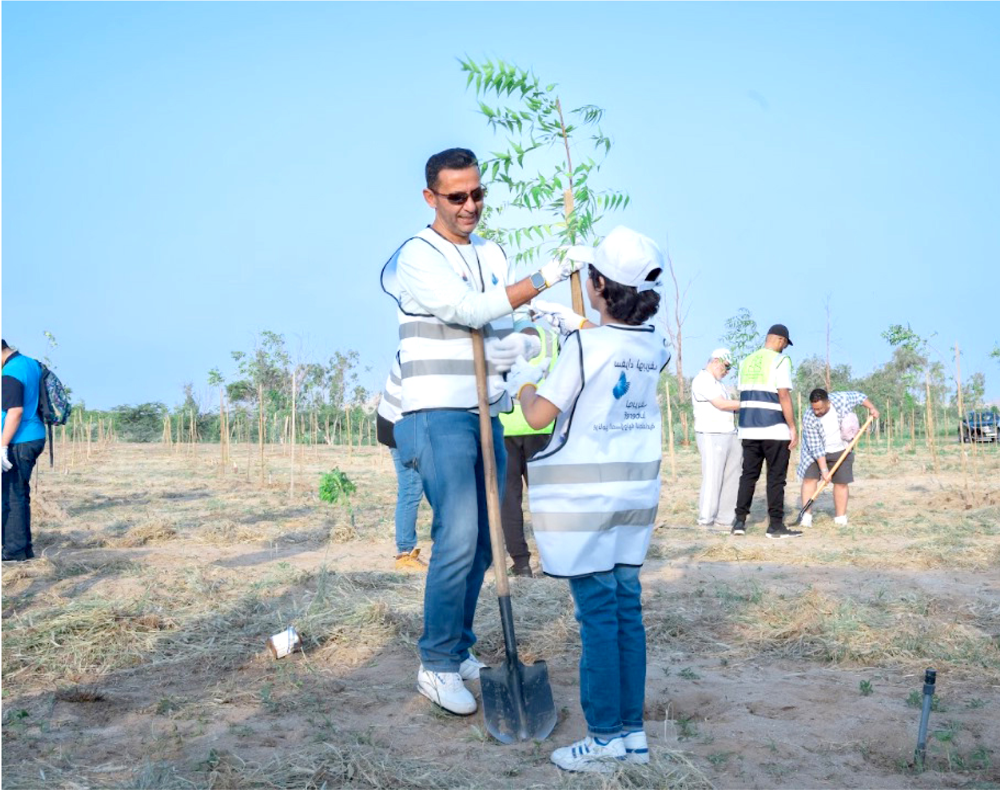
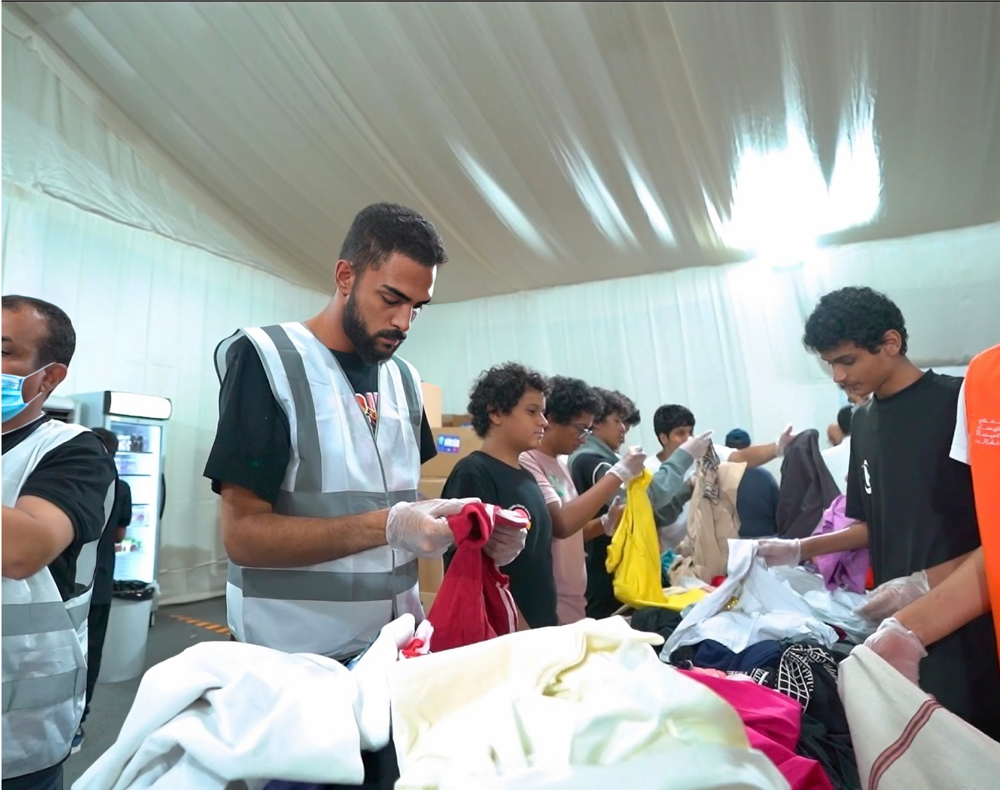
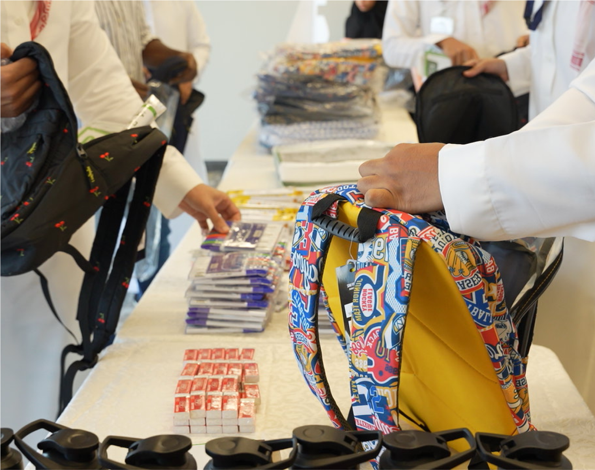
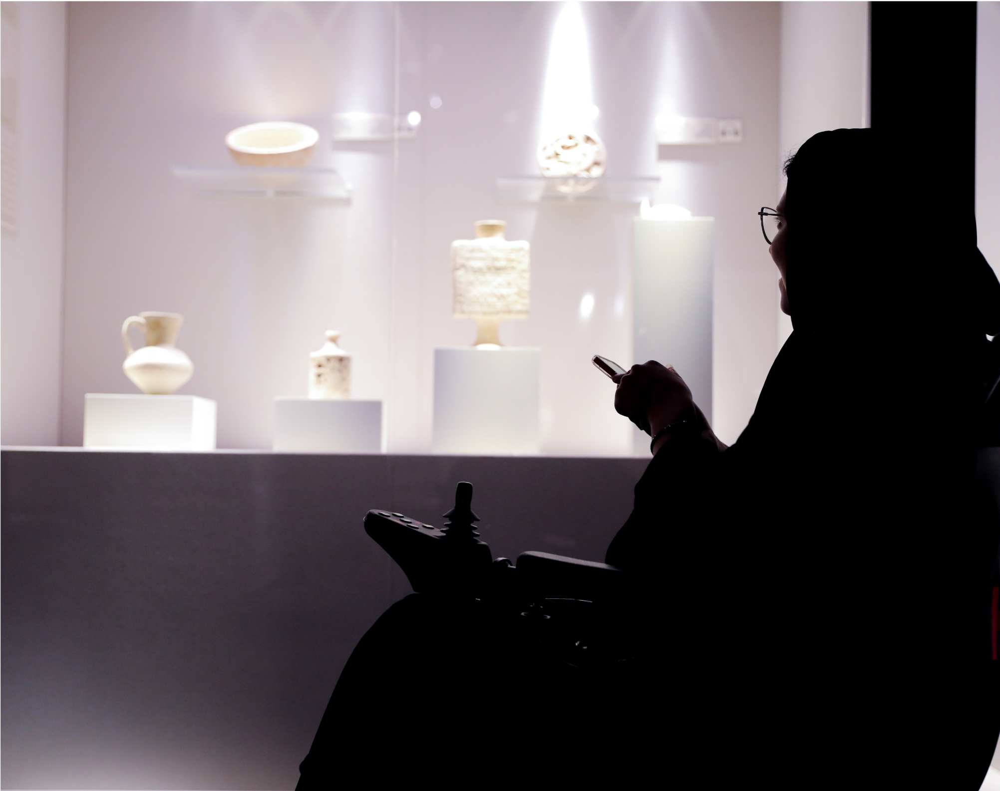
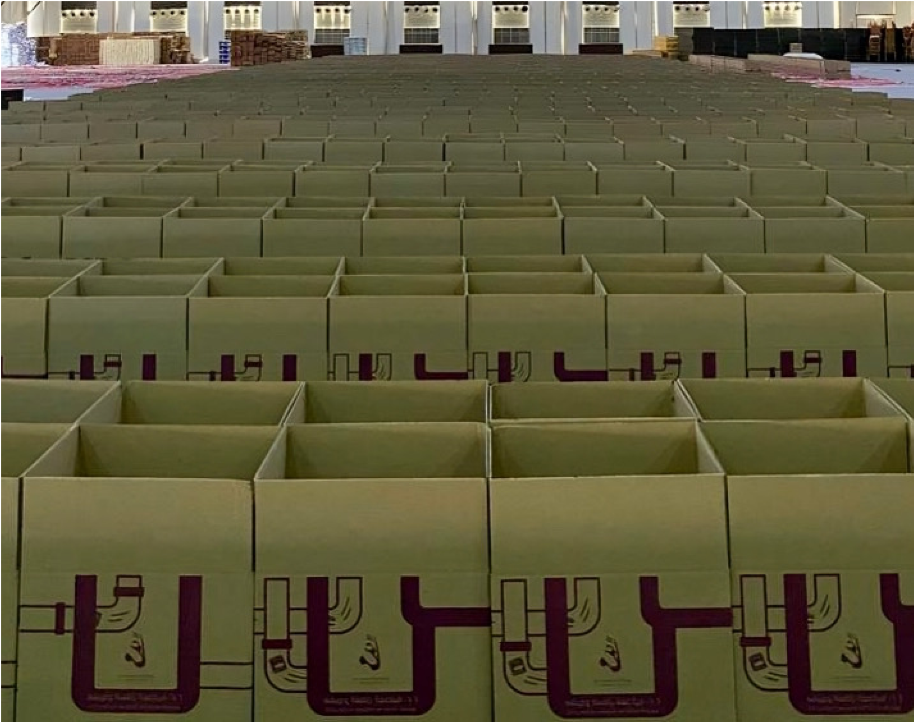
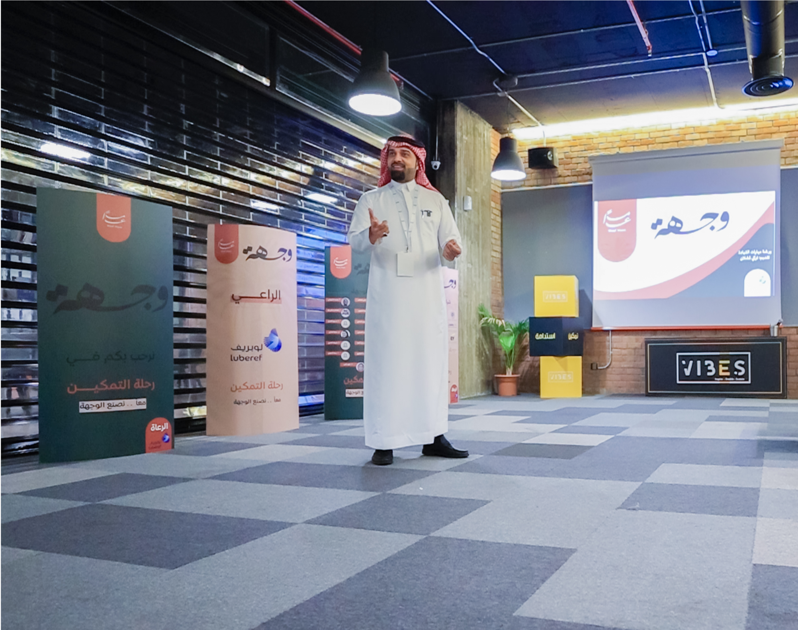
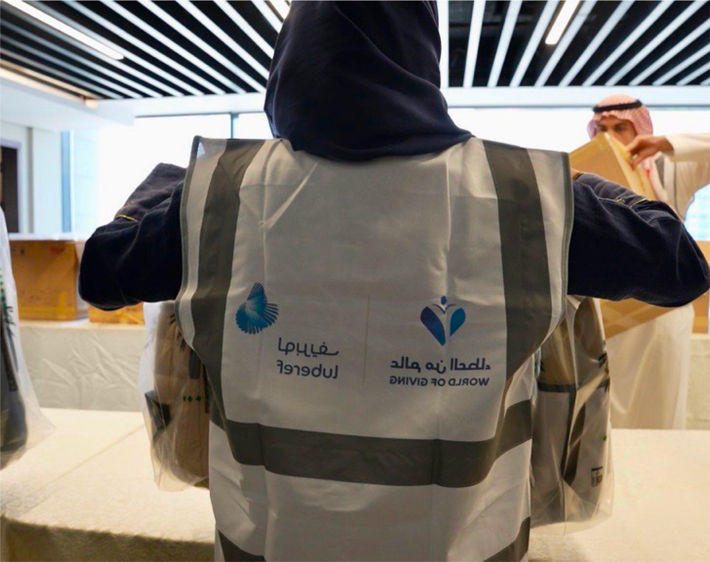

تبني لوبريف المستقبل من خلال الربط الفعال بين أعمالها والرفاهية الشاملة والمستدامة للناس والكوكب. ويعزز هذا الالتزام أسس نجاح لوبريف على المدى الطويل كما يدعم سمعة لوبريف باعتبارها شركة مسؤولة، حيث تتحمل الشركة المسؤولية الكاملة عن قرارتها وعن التقييم.
تولي لوبريف الأولوية لجوانب البيئة والصحة والسلامة، على صعيد عملياتها كافة، وهو ما يدعم هدفها المتمثل في حماية القوى العاملة لديها، ومنع خسائر الممتلكات وضمان استمرار الأعمال، في ظل التأقلم مع ظروف السوق المتغيرة والظروف التشغيلية في ذات الوقت. وينعكس هذا الالتزام على معايير لوبريف التي تتبنى نهج التحسين المتواصل، وتمثل هذه المعايير الممارسة المتبعة والمتعارف عليها في جميع نواحي الصناعة.
وتنطوي سياسة لوبريف البيئية على أهداف طموحة وإجراءات أداء قوية وإطار عمل لرصد وقياس الأداء. وتعزز علاقات الشركة التعاونية مع أرامكو السعودية من موقف الشركة البيئي. بالإضافة إلى ذلك، تقوم لوبريف بتطوير استراتيجيتها بنشاط على المدى البعيد للوصول إلى صافي انبعاثات صفرية بحلول عام 2050.
منذ عام 2011، أنشأت لوبريف نظام إدارة السلامة القوي استنادًا إلى برنامج دوبونت للحلول المستدامة، والذي يركز في الأساس على عمليات السلامة. ويغطي نهج «السلامة أولاً» جميع جوانب الأنشطة التجارية، ما يساعد على إرساء ثقافة السلامة وتحقيق إنجازات بارزة تتمثل في الوصول إلى إجمالي معدل صفر في الحوادث المسجلة، وذلك للعام الرابع على التوالي في عام 2023. بالإضافة لأكثر من 35 مليون ساعة عمل دون إصابات هادرة للوقت.
تمشيًا مع رؤية السعودية 2030 وبالتعاون مع جمعية المسؤولية المجتمعية بمكة، تفخر لوبريف برعاية مبادرة زراعة ألف شجرة من أشجار النيم في الغابة الشرقية، وذلك في إطار مبادرة «وطن أخضر» ومبادرة السعودية الخضراء. ولقد شارك في هذا المشروع البيئي ما يزيد على 35 موظفاً متطوعا وأسرهم.

حظيت لوبريف بشرف المشاركة في هذه المبادرة للعام الثاني على التوالي كراع فضي لمبادرة كسوة السيدة عائشة، البرنامج الذي يهدف إلى توفير كسوة العيد للأسر المحتاجة. وتعمل هذه المبادرة من خلال الإسهامات المجتمعية بالملابس الجديدة والمستعملة. ونحن إذ ننتهز هذه الفرصة للتعبير عن امتناننا لموظفينا الذين تطوعوا للمشاركة بوقتهم وجهدهم في هذه المبادرة. وقد بلغ إجمالي مبلغ رعاية لوبريف لهذه المبادرة 75 ألف ريال سعودي.

أطلقت هذه المبادرة بالتعاون مع جمعية «وقف معاً» لتنمية المجتمع، وقامت لوبريف برعاية مبادرة العودة إلى المدرسة للعام الثاني على التوالي، حيث قام متطوعون من صفوف موظفينا بتنظيم وتجهيز 400 حقيبة مدرسية بجميع الأدوات الأساسية لتقديمها للأطفال في الأسر ذات الدخل المحدود، لضمان عام دراسي ناجح لهم. وبلغ إجمالي مبلغ رعاية الشركة لهذه المبادرة 64 ألف ريال سعودي.

تمشيًا مع التزام لوبريف تجاه المسؤولية المجتمعية للشركات، قمنا بالتعاون مع جمعية مجد للتنمية والخدمات الاجتماعية لإطلاق مبادرة «متجري». ويهدف هذا البرنامج بوجه خاص إلى دعم الشركات الصغيرة الحالية التي تعمل في مجال الصناعات الحرفية والإبداعية، وذلك لتمكين رواد الأعمال من تطوير وبناء وجودهم عبر الإنترنت. والواقع أن تفعيل هذه المبادرة أثناء أسبوع ريادة الأعمال يلقي الضوء على تفانينا لتعزيز الكوكبة الصاعدة من رواد الأعمال.

إنه ليسعدنا ويشرفنا في لوبريف أن نشارك في هذه المبادرة للعام الرابع على التوالي، كراع ذهبي لمبادرة «دعونا نسير معًا» المقامة على كورنيش واجهة جدة البحرية. يتم تنظيم هذا البرنامج بالتعاون مع «مركز العون» احتفاءً بالمهارات والقدرات الرياضية للأشخاص ذوي الإعاقة، من أجل رفع مستوى الوعي في المجتمع. وقد وصل إجمالي مبلغ رعاية الشركة في هذه المبادرة إلى 63 ألف ريال سعودي.

تلتزم لوبريف بدعم المبادرات التعليمية التي تعمل على تمكين أجيال المستقبل، حيث أسهمت الشركة بشكل موسع بمبلغ وصل إلى 2.4 مليون ريال سعودي (600 ألف ريال كل عام منذ 2022) في رعاية مشروع وقف التعليم التابع لأكاديمية «مداك» في منطقة المدينة المنورة، لبناء مختبر ذكي عالي التقنية مجهز بأحدث التقنيات والذي تم افتتاحه في عام 2023.

بالتعاون مع جمعية «وقف معًا» لتنمية المجتمع، ساهمت لوبريف وموظفوها للعام الخامس على التوالي في المساعدة في توزيع السلال الغذائية الرمضانية. وتوفر هذه المبادرة الاحتياجات الغذائية الأساسية لما يزيد على 2,500 أسرة منخفضة الدخل وعائلات اليتامى وذوي الإعاقة في منطقة مكة المكرمة، وقد وصل إجمالي إسهام لوبريف في هذه المبادرة إلى مبلغ 75 ألف ريال سعودي.

تعاونت لوبريف مع جمعية «وقف معًا» لتنمية المجتمع، حيث قامت برعاية مبادرة «برنامج الوجهة»، والذي يهدف إلى تدريب وتمكين الفتيات الشابات لسوق العمل من خلال رحلة التدريب التطبيقي المتكامل. ووصل إجمالي مبلغ رعاية الشركة لهذه المبادرة إلى 219 ألف ريال سعودي وهو ما يعبر عن التزام الشركة بتعزيز تمكين النساء وتطويرهن المهني.

احتفالاً باليوم العالمي للتطوع في إطار المسؤولية الاجتماعية للشركات، سعدنا في لوبريف بإطلاق برنامج التطوع الداخلي «عالم من العطاء»، والذي يتوافق مع برنامج المسؤولية الاجتماعية ورؤية المملكة 2030 وتركيزها على العمل التطوعي، وذلك في سبيل تعزيز روح العطاء داخل مجتمعاتنا.

إقراراً منا بأهمية الصحة واللياقة العامة، قامت لوبريف برعاية مشاركة موظفيها في دوري كرة القدم لعام 2023. ولقد امتد دعمنا إلى توزيع الجوائز على الحاصلين على المركز الأول، لتعزيز إحساسهم بالزمالة ودعم الروح الرياضية بين أعضاء الفريق.